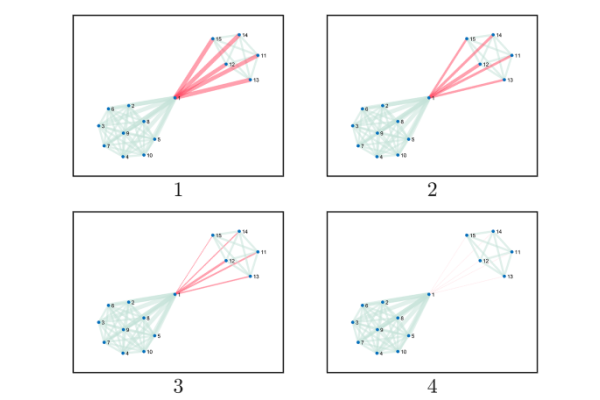
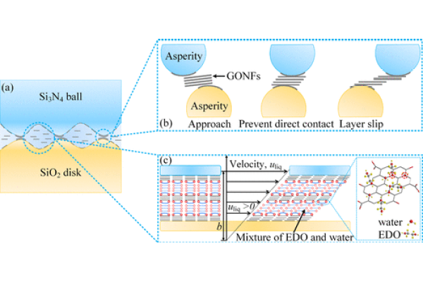

Publications
publications by categories. generated by jekyll-scholar.
Preprints
-
Hawkes Process Modeling of Block Arrivals in Bitcoin BlockchainarXiv preprint arXiv:2203.16666 2022
Conference papers
2023
2022
2021
-
ICASSP Segregation in Social Networks: Markov Bridge Models and EstimationIn ICASSP 2021-2021 IEEE International Conference on Acoustics, Speech and Signal Processing (ICASSP) 2021
2018
Journal papers
2023
2022
2021
2018
-
Appl. Mater. Interfaces Macroscale superlubricity enabled by the synergy effect of graphene-oxide nanoflakes and ethanediolACS applied materials & interfaces 2018